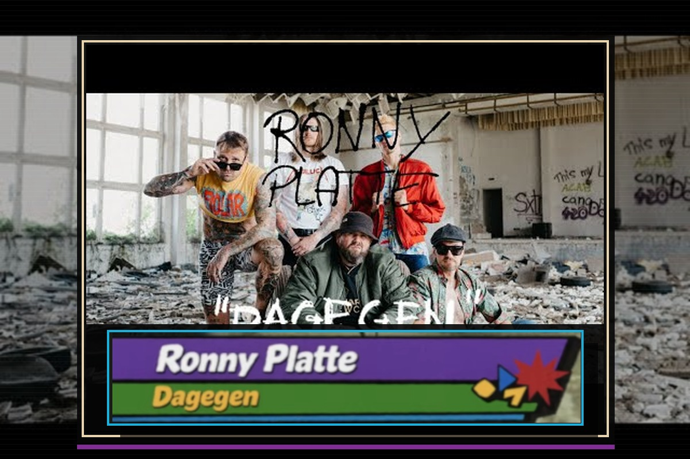

Review
RONNY PLATTE - Dagegen

Worum geht's?
HUH!
Ich habe keine Ahnung.
Bin dagegen.
Und damit wären wir eigentlich schon mitten im Refrain.
Kein Wunder, dass Feine Sahne Fischfilet das Ding gerade durch die Gegend schieben. Warum genau? Keine Ahnung. Darüber dürft ihr gerne in den Kommentaren spekulieren. Ich kümmere mich lieber um den Song.
Und der macht etwas mit mir.
Zuerst klingt alles nach genau dem Punkrock, den wir seit Jahrzehnten lieben.
Einfach.
Schnell.
Ungeschliffen.
Keine Tricks.
Kein Produzenten-Zirkus.
Kein Versuch, das Rad neu zu erfinden.
Dann kommt der Refrain.
BÄM!
In die Fresse.
"Ich bin dagegen."
Mehr braucht es manchmal nicht.
Das Gefährliche daran: Der Song nimmt sich selbst nicht komplett ernst.
Er pöbelt gegen alles und jeden.
Gegen Zustände.
Gegen Meinungen.
Gegen Menschen.
Vermutlich auch gegen die Punks, die vor der Bühne im Pit stehen und gerade sehr überzeugt davon sind, dass sie diesen Song verstanden haben.
Genau diese Selbstironie macht die Nummer so stark.
Herrlich alt.
Und gleichzeitig erstaunlich jung geblieben.
Oder wie man bei gutem Wein sagt:
Verdammt gut gealtert.
Beim ersten Schauen des Videos hatte ich übrigens kurz einen anderen Gedanken.
"Moment mal ... singt da Butterwegge?"
Tut er natürlich nicht.
Glaube ich.
Wer da wirklich singt?
Keine Ahnung.
Sicher irgendein Statist.
Zwischen all dem Krach liegt dann noch dieser kleine Tritt gegen Menschen, die zu wirklich jedem Scheiß eine Meinung haben.
Da fühlte ich mich als Betreiber eines Punk-Fanzines natürlich sofort persönlich angesprochen.
Ich habe schließlich gerade eine komplette Review zu einem Song geschrieben, dessen Kernaussage im Wesentlichen lautet:
Dagegen.
Erwischt.
Was die Geschichte hinter dem Song fast noch spannender macht: Jahrzehntelang war RONNY PLATTE offenbar mehr Legende als Band. Geschichten gab es reichlich. Kassetten wohl auch. Eine richtige Veröffentlichung dagegen nicht.
Bis jetzt.
Laut Begleittext ist "Dagegen" die erste Single überhaupt. Der Titeltrack der gleichnamigen EP, die am 10.07.2026 erscheint. Fünf Songs voller Wut, Trotz und Provinzromantik. Aufgenommen mehr als zwanzig Jahre nach den ersten Proberaumversionen und trotzdem so, als wäre seitdem kein Tag vergangen.
Und ganz ehrlich:
Wenn "Dagegen" stellvertretend für diese EP steht, dann verstehe ich langsam, warum sich diese Geschichten so lange gehalten haben.
Fazit:
Lange nicht mehr so eine geile Scheiße gehört.
Der Song ist einfach.
Der Song ist direkt.
Der Song macht genau das, was guter Punkrock machen soll.
Er läuft nicht lange um die eigene Idee herum.
Er kommt rein.
Sagt, dass er dagegen ist.
Und dann will man ihn direkt noch einmal hören.
Gib mir mehr.
Und wenn der Rest der EP am 10.07.2026 kacke ist, werfe ich jemanden von Feine Sahne Fischfilet persönlich mit der Platte ab.
Wogegen?
Keine Ahnung.
Bin dafür.
Das Video findet ihr hier: Ronny Platte - Dagegen.
Die auf 3.000 Exemplare limitierte 12"-Vinyl-EP könnt ihr über Plattenweg vorbestellen.